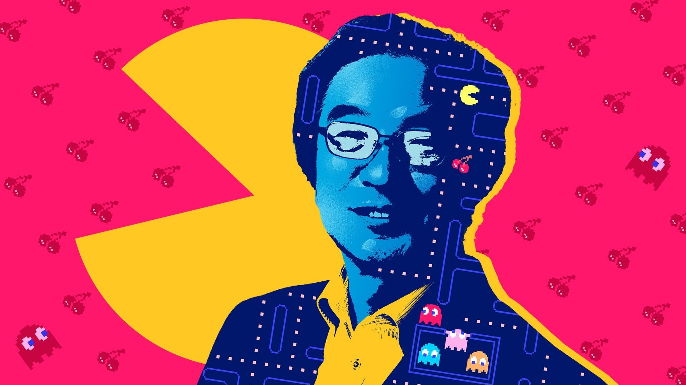
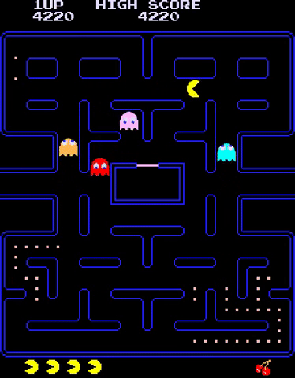

PACMAN
Inventing Pac-Man
The classicand enormously popular Pac-Man video game came out in Japan on May 21 1980,and by October of that year it was released in the United States. The yellow, pie-shaped Pac-Man character, who travels around a maze trying to eat dots and avoid four hunting ghosts.

According to Japanese game designer Toru Iwatani, Pac-Man was conceived as an antidote to the overwhelming number of games with violent themes, such as Asteroids, Space Invaders, Tail Gunner, and Galaxian. Pac-Man's innovative break away from the shoot-em-up style of arcade game would crack open the video game universe.
Instead of a warrior fighting off attackers by firing ammunition at them, the Pac-Man character chews its way to victory. The game contains several references to food: Pac-Man chomps away at pills in his path, and consumes bonus items in the shape of fruits and power pellets (originally) in the shape of cookies. The inspiration for the design of the shape of the yellow Pac-Man character has been reported as a pizza with a slice out of it, and/or a simplified version of the kanji character for mouth, kuchi.

Playing Pac-Man
Game play begins with the player manipulating Pac-Man using either keyboard arrows or a joystick. The goal is to move Pac-Man around the maze-like screen to consume lines of 240 dots and avoiding or
attacking one of four hunting ghosts (sometimes called monsters).
The four ghosts come in different colors: Blinky (red), Inky (light blue), Pinky (pink), and Clyde (orange). Each ghost has a different attack strategy: for example, Blinky is sometimes called Shadow because it moves the fastest. As the game progresses, the ghosts leave the "ghost cage" in the center of the maze and roam around the board. If Pac-Man collides with a ghost, he loses a life and the game restarts.
Four power pellets are available in the corners of each level, and if Pac-Man can gobble one of those, the ghosts all turn dark blue and can be eaten by Pac-Man. Once a ghost is gobbled up, it disappears and its eyes run back to the ghost cage and reform to fight again. Bonus objects in the form of fruit and other objects may be gobbled up to earn additional points, with different fruits bringing different values. The game ends when Pac-Man has lost all (usually three) of his lives.
By:Jennifer Rosenberg